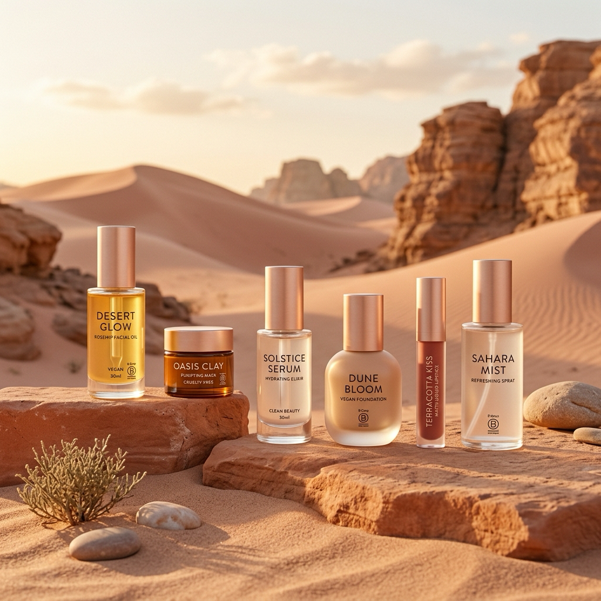
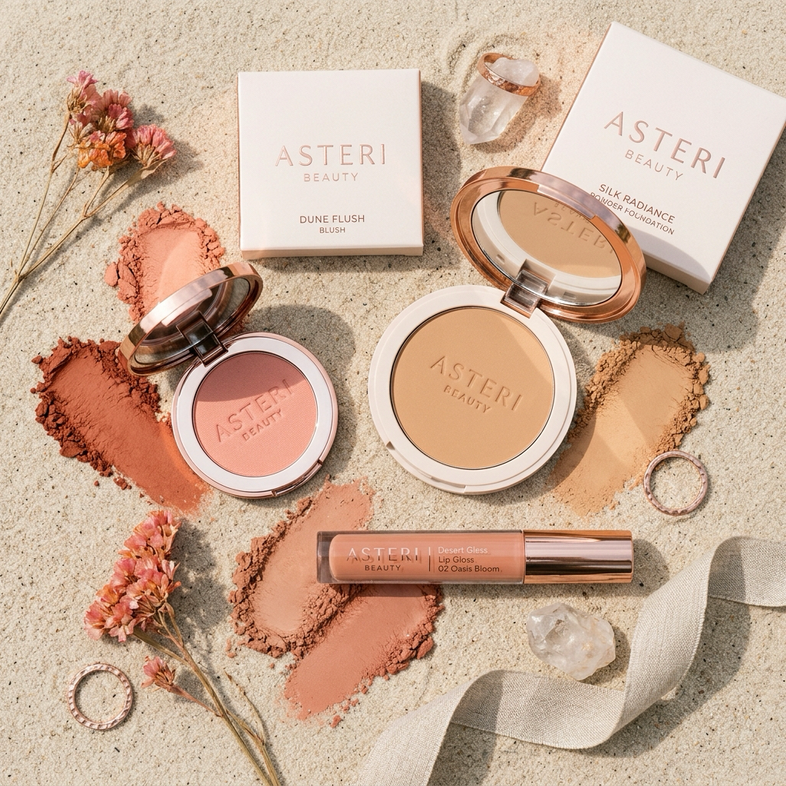
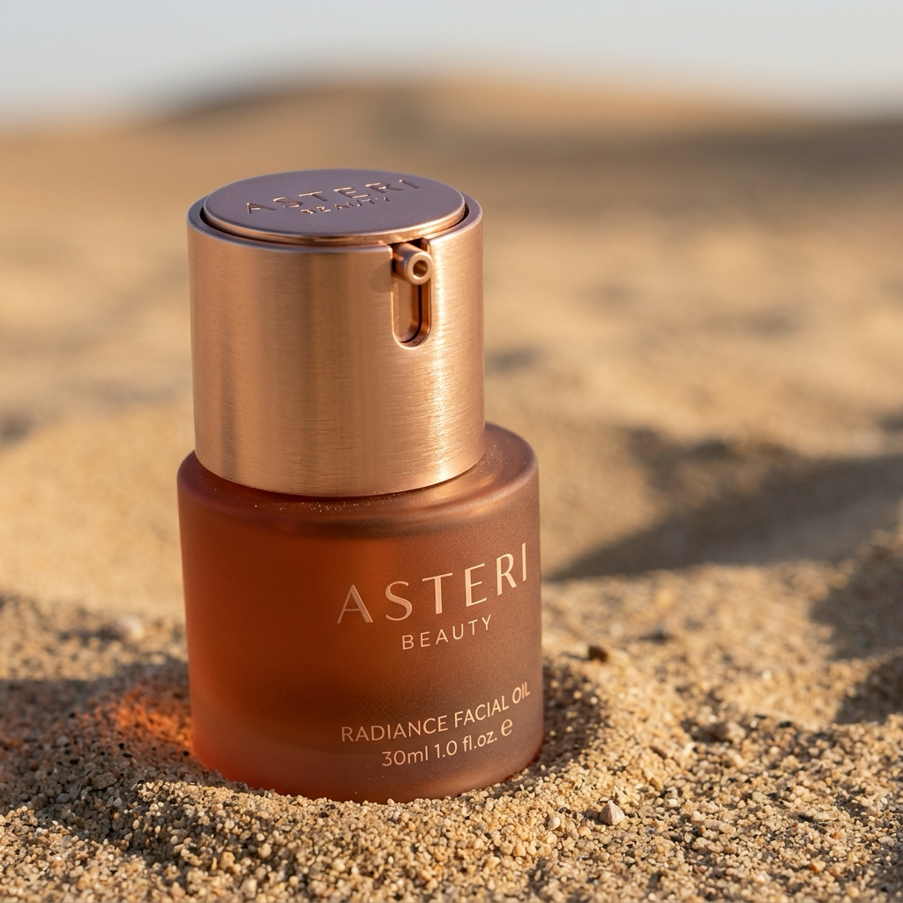

Building the Kingdom's premier clean beauty community. Tailored vegan formulations, B-Corp certified sustainability, and a structured creator flywheel designed to bypass trust deficits, lower CAC, and scale retention.
Beauty in Saudi Arabia has moved beyond standard endorsements. The modern Saudi consumer demands clean, high-performance vegan beauty backed by community consensus and raw, unedited UGC.
Cruelty-free cosmetics tailored specifically for the warm desert climate. Clean beauty that performs under Saudi sun, validated by local creators.
Three interconnected loyalty tiers feeding UGC, driving organic retention, and establishing Asteri as KSA's clean beauty benchmark.
Our strategic blueprint aligns B-Corp standards with KSA's fast-growing luxury beauty market.
Conventional marketing CAC in the Gulf is at an all-time high. Trust is the new currency. By activating Saudi creators at three distinct operational levels, we build a self-sustaining engine of trust.
To bypass the KSA content bottleneck and maximize Customer Lifetime Value (LTV), we establish three distinct community layers. Each tier drives specific business outcomes.
High-tier beauty authorities and cosmetic experts collaborating on exclusive desert shades and seasonal launches.
Nano and micro-influencers producing raw, daily UGC (swatches, reviews, wear-tests) to build localized trust at scale.
Educational portal for everyday consumers. Provides courses, community forums, and points for eco-sustainability habits.
This visual grid defines how Asteri Beauty converts social trust into long-term customer equity.
Most beauty brands rely on foreign influencers and high-production ads. Asteri Beauty captures the open space by utilizing local, authentic consumer validation.
Lack of raw, unpolished, locally-created content showing beauty products on Saudi skin tones in natural light.
Gulf consumers purchase once and churn. Without ongoing brand integration and skincare education, loyalty is brief.
We leverage local KSA ambassadors and education to build a community-led beauty house that keeps consumers returning.
Asteri Beauty sits uniquely at the intersection of local community advocacy and high-performance vegan cosmetics, outperforming traditional retail and regional giants.
The pioneer: local community-led advocacy, clean vegan certified formulations, and authentic regional storytelling tailored specifically for Saudi skin tones.
High brand awareness and celebrity-driven appeal, but lacks clean/vegan focus and relies heavily on global templates rather than hyper-local Saudi community initiatives.
Global beauty powerhouse with massive distribution networks. However, they suffer from high CAC and lack a unified, organic local creator ecosystem.
Agile and cost-effective, but struggle to scale due to limited supply chain infrastructure, lack of clinical credentials, and low marketing visibility.
Our brand visuals mirror Asteri Beauty's premium identity: textured desert sand backdrops, rose-gold accents, and clean terracotta glass vessels that tell a story of regional pride and luxury.



We do not execute disconnected campaigns. We establish a strategic community workflow where each phase feeds the next, reducing paid acquisition reliance over time.
The execution framework is divided into comprehensive milestones, establishing Asteri's community structure from the ground up.
| Community Blueprint & VIP Co-Creator Framework Mapping recruitment parameters, prestige alignment, and co-development contracts. |
Milestone 1 |
| Ambassador Collective Infrastructure UGC collection guidelines, tracking portals, onboarding kits, and reward systems. |
Milestone 2 |
| Skincare Academy Curriculum & Platform Design B-Corp clean beauty educational materials, skin-tone matching guides, and loyalty integration. |
Milestone 3 |
| KSA UGC Seed Campaign Playbook Execution templates for micro-influencer product distributions and social amplification rules. |
Milestone 4 |
| Complete Community Launch Package | All Deliverables Included |
We build, test, and scale. We optimize VIP relationships before launching the mass ambassador tier, and launch the Academy only when the UGC flywheel is active.
Finalize positioning. Recruit the first 10 VIP Co-creators. Create seeding kit designs and B-Corp messaging frameworks.
Deploy onboarding kits to 100 Saudi micro-influencers. Launch UGC portal to collect raw, authentic wear-tests under natural light.
Launch the online Skincare Academy. Introduce community points for clean cosmetic refills, maximizing customer LTV.
Our strategic approach does not just drive short-term sales; it integrates B-Corp sustainability directly into Asteri's growth model.
Clean formulations optimized for the Gulf climate, shipped in minimalist, recyclable glass and terracotta vessels. Encouraging conscious consumerism via empty-refill community points.
Empowering local Saudi creators through structured educational masterclasses, ensuring high-quality skincare knowledge across KSA.
Vegan formulas developed to look pristine in high heat, proving Asteri's B-Corp product integrity where global brands melt.
Saudi consumers look to peers, not global ads. A local ambassador network generates authentic word-of-mouth credibility.
Our Academy keeps buyers engaged. Eco-rewards for bottle returns tie retention directly to B-Corp sustainability pillars.
Every aspect of the community workflow is designed to build localized brand equity and reduce paid media dependence. الاستدامة تصنع الولاء
KSA beauty advocates submit profiles detailing skin tone, aesthetic alignment, and clean beauty interests.
Approved ambassadors receive custom Asteri Beauty seeding kits featuring vegan lip gloss, powder foundations, and blush.
Ambassadors upload raw review and shade-swatch content directly to Asteri's creator portal.
Active creators gain exclusive access to Skincare Academy masterclasses and co-creation opportunities.